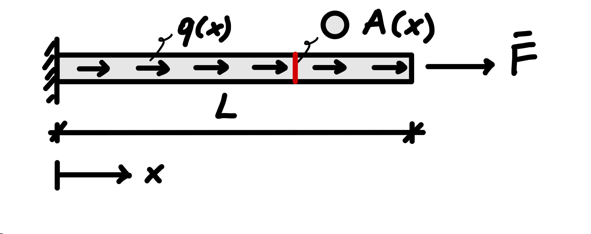
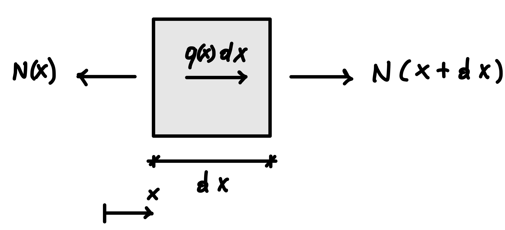
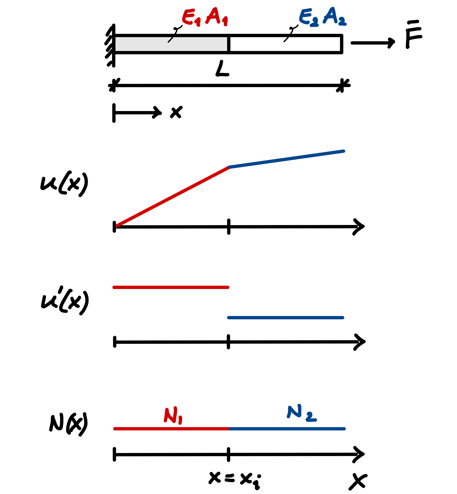

9 The weak form of the one-dimensional axial bar”
Part II introduced the finite element assembly process through discrete spring systems. For those systems, the element force–displacement relations followed directly from spring kinematics, the constitutive law, and equilibrium. Part III moves to continuum problems, where the unknown is a field governed by a differential equation. Before the familiar finite element assembly process can be used, the continuum problem must therefore be reformulated in a form suitable for numerical approximation.
The familiar algebraic system \(\mathbf{K}\mathbf{u}=\mathbf{f}\) will eventually reappear, but the path to it is now different: the governing differential equation is first reformulated in weak form and only then restricted to a finite-dimensional approximation. This formulation provides a systematic basis for handling spatially varying properties, distributed loads, natural boundary conditions, and finite element approximations of different orders. It therefore provides the bridge between the continuum model and the finite element equations that will ultimately be assembled.
9.1 From three-dimensional equilibrium to a one-dimensional model
In a general three-dimensional continuum, whether the deformation is small or finite and whether the material response is linear or nonlinear, the quasi-static equilibrium equation in the current configuration can be written as \[ \nabla\cdot\boldsymbol{\sigma}+\mathbf{b}=\mathbf{0}, \]
where \(\boldsymbol{\sigma}\) is the Cauchy stress tensor and \(\mathbf{b}\) is the body-force vector per unit current volume. The assumptions of small deformation and linear elasticity will be introduced later through the kinematic and constitutive relations. Throughout this book, the first stress index identifies the normal to the plane on which the stress acts, while the second identifies the direction of the stress component. With this convention, the Cartesian equilibrium equations are \[ \begin{aligned} \frac{\partial \sigma_{xx}}{\partial x} +\frac{\partial \sigma_{yx}}{\partial y} +\frac{\partial \sigma_{zx}}{\partial z} +b_x &= 0,\\[4pt] \frac{\partial \sigma_{xy}}{\partial x} +\frac{\partial \sigma_{yy}}{\partial y} +\frac{\partial \sigma_{zy}}{\partial z} +b_y &= 0,\\[4pt] \frac{\partial \sigma_{xz}}{\partial x} +\frac{\partial \sigma_{yz}}{\partial y} +\frac{\partial \sigma_{zz}}{\partial z} +b_z &= 0. \end{aligned} \] For the continuum model considered here, balance of angular momentum implies that the Cauchy stress tensor is symmetric (\(\boldsymbol{\sigma}=\boldsymbol{\sigma}^{\mathsf T}\) or \(\sigma_{ij}=\sigma_{ji}\)). Together with kinematic relations, a constitutive law, and appropriate boundary conditions, the equilibrium equations define a boundary-value problem.
We now introduce a one-dimensional idealization of a slender three-dimensional body: the axial bar model. The bar is assumed to be slender, aligned with the \(x\) axis, and subjected to axial loading, as shown in Figure 9.1. Its deformation is described by an axial displacement field \(u(x)\), while the stress distribution over each cross-section is represented by the axial resultant \(N(x)\).

As discussed in Chapter 3, the one-dimensional bar model is based on a kinematic idealization: only the axial displacement is retained, and it is assumed to be uniform over each cross-section and to vary only along the bar axis. Lateral deformation, including effects such as Poisson contraction, is not represented by the one-dimensional model. The displacement field is therefore described by the scalar function
\[ u=u(x). \]
Under the small-strain assumption, the axial strain retained by the model is
\[ \varepsilon(x) = \varepsilon_{xx}(x) = \frac{du}{dx} = u'(x). \]
For a linearly elastic material,
\[ \sigma(x)=E(x)\varepsilon(x). \]
The internal axial force is obtained by integrating the axial stress over the cross-section,
\[ N(x)=\int_{A(x)} \sigma\,dA. \]
For the one-dimensional bar model, the axial stress is assumed to be uniform over each cross-section. The resultant therefore reduces to
\[ N(x)=A(x)\sigma(x). \]
Using the linear elastic constitutive relation \(\sigma(x)=E(x)\varepsilon(x)\) together with \(\varepsilon(x)=u'(x)\) gives
\[ \boxed{ N(x)=E(x)A(x)u'(x) }. \]
Correspondingly, the distributed axial load \(q(x)\) represents the external load resultant per unit length of the bar. It may include contributions from body forces acting over the cross-section and from tractions applied to the lateral surface. We may therefore write
\[ q(x) = \int_{A(x)} b_x\,dA + q_s(x), \]
where \(q_s(x)\) denotes the axial load per unit length resulting from lateral surface tractions.
If the body-force density \(b_x(x)\) is uniform over the cross-section and no lateral traction is present, this reduces to
\[ q(x)=A(x)b_x(x). \]
Loads applied to the end cross-sections are treated separately as boundary forces.
9.2 Equilibrium and the strong form
Consider the equilibrium of an infinitesimal segment of the bar.

The quantity \(q(x)\,dx\) shown in Figure 9.2 represents the leading-order resultant of the distributed load over the infinitesimal segment. In the equilibrium equation below, we retain the exact resultant \(\int_x^{x+dx}q(s)\,ds\) before taking the limit \(dx\to0\).
We take \(N>0\) in tension and \(q>0\) when the distributed load acts in the positive \(x\) direction. With this sign convention, axial force equilibrium over the segment \([x,x+dx]\) gives
\[ -N(x)+N(x+dx)+\int_x^{x+dx} q(s)\,ds=0. \]
Dividing by \(dx\),
\[ \frac{N(x+dx)-N(x)}{dx} + \frac{1}{dx}\int_x^{x+dx} q(s)\,ds =0. \]
Taking the limit as \(dx\to0\) gives the local equilibrium equation
\[ \boxed{ \frac{dN}{dx}+q=0 }. \]
Using
\[ N(x)=E(x)A(x)u'(x), \]
we obtain the governing differential equation
\[ \boxed{ \frac{d}{dx}\left(EA\,u'\right)+q=0 \qquad \text{in }\Omega=(0,L). } \]
This form remains valid when \(E\), \(A\), or both vary along the bar. Only when \(EA\) is constant can it be reduced to
\[ EA\,u''+q=0 \qquad \text{in }\Omega=(0,L). \]
The governing bar equation is the one-dimensional counterpart of the elliptic equations that arise in static elasticity.
In two and three dimensions, combining equilibrium, kinematics, and a stable elastic constitutive law leads to a coupled system of second-order elliptic partial differential equations for the displacement field. In the present one-dimensional setting, the corresponding problem reduces to a second-order ordinary differential equation.
For positive axial rigidity \(E(x)A(x)>0\) throughout the bar, the differential operator \[ -\frac{d}{dx} \left( EA\,\frac{d}{dx} \right) \]
is the one-dimensional analogue of an elliptic operator.
A differential equation alone does not define the problem completely. Boundary conditions are also required.
For the bar considered here, the left end is fixed,
\[ u(0)=0, \]
while the axial force prescribed at the right end is
\[ N(L)=E(L)A(L)u'(L)=\bar F, \]
with \(\bar F>0\) acting in the positive \(x\) direction.
The displacement condition is a Dirichlet, or essential, boundary condition. The force condition is a Neumann, or natural, boundary condition.
In general, the boundary \(\Gamma\) is partitioned into a displacement part \(\Gamma_u\) and a traction part \(\Gamma_t\). For the present one-dimensional problem,
\[ \Gamma_u=\{0\}, \qquad \Gamma_t=\{L\}. \]
The prescribed displacement on \(\Gamma_u\) is \(u=0\), while the prescribed traction resultant on \(\Gamma_t\) is \(N=\bar F\).
The governing differential equation, together with the associated boundary conditions, constitutes the strong form of the boundary-value problem.
9.3 Why introduce a weak form?
The strong form imposes the governing differential equation pointwise and therefore places relatively strong smoothness requirements on the displacement field.
As an example, consider a perfectly bonded bar made of two materials. If the axial rigidity \(EA\) changes abruptly across the material interface, equilibrium requires the axial force
\[ N=EA\,u' \]
to remain continuous in the absence of an interface load. Because perfect bonding also requires the displacement \(u\) to remain continuous, a nonzero transmitted axial force produces different displacement gradients on the two sides of the interface whenever the values of \(EA\) differ. Thus, \(u\) remains continuous while \(u'\) is generally discontinuous across the interface, as illustrated in Figure 9.3.

The appropriate divergence form of the equilibrium equation is
\[ \frac{d}{dx}\left(EA\,u'\right)+q=0, \]
rather than the expanded form \(EA\,u''+q=0\), which is valid only where \(EA\) is constant.
In this example, the physical equilibrium condition remains perfectly valid: the axial force \(N=EA\,u'\) is continuous across the interface. What changes is the regularity of the displacement field. Because \(u'\) is discontinuous across the material interface, the displacement field \(u\) does not have a classical second derivative at the interface.
The difficulty is therefore related to the smoothness required to enforce the strong form pointwise. A weak formulation expresses the same equilibrium problem while requiring fewer derivatives of the displacement field. As we will see shortly, equilibrium is no longer enforced pointwise; instead, it is imposed in a weighted, integral sense over the domain. In the standard displacement-based finite element formulation used here, this allows the displacement approximation to remain continuous while its derivatives may be discontinuous across material interfaces or element boundaries. The first step toward this formulation is to replace pointwise enforcement of the differential equation by a weighted integral statement.
9.4 The weighted residual statement
Define the residual of the governing equation as
\[ r(u) = \frac{d}{dx}\left(EA\,u'\right)+q. \]
The strong form requires
\[ r(u)=0 \qquad \text{at every point in }\Omega. \]
Rather than requiring the strong form to hold pointwise, we introduce a test, or weight, function \(w(x)\) and require the weighted residual to vanish for every admissible test function: \[ \boxed{ \int_0^L w\,r(u)\,dx=0 \qquad \forall\,w\in V. } \]
Here, admissible means that the function has the regularity required by the formulation and satisfies the relevant essential boundary conditions; the precise test space will be defined below.
The trial field is a candidate for the unknown displacement field \(u\).
A test function, also called a weight function, is used to test the equilibrium statement through the weighted residual or weak form.
A function is admissible when it has the required regularity and satisfies the appropriate essential boundary conditions. For trial fields this means \(u=\bar u\) on \(\Gamma_u\), where \(\bar u\) denotes the prescribed displacement; for test functions it means the corresponding homogeneous condition \(w=0\) on \(\Gamma_u\).
The same test function \(w\) appearing in the weighted residual statement may also be interpreted as an admissible variation of the displacement field: a perturbation that does not violate the prescribed displacement.
More specifically, let \(u\) be an admissible displacement field satisfying
\[ u=\bar u \qquad \text{on }\Gamma_u. \]
A perturbed field can be written as
\[ u+\eta w, \]
where \(\eta\) is an arbitrary scalar. For the perturbed field to satisfy the same prescribed displacement, we must also have
\[ u+\eta w=\bar u \qquad \text{on }\Gamma_u. \]
Since \(u=\bar u\) on \(\Gamma_u\), this condition reduces to
\[ \eta w=0 \qquad \text{on }\Gamma_u. \]
Because \(\eta\) is arbitrary, the test function must therefore satisfy
\[ w=0 \qquad \text{on }\Gamma_u. \]
Thus, trial fields satisfy the prescribed essential boundary condition, whereas test functions satisfy the corresponding homogeneous condition.
Here \(V\) denotes the set of admissible test functions; it will be defined precisely below. For the axial bar,
\[ \int_0^L w \left[ \frac{d}{dx}\left(EA\,u'\right)+q \right] dx =0 \qquad \forall\,w\in V. \]
It is not enough for one weighted average of the residual to vanish. The integral relation must hold for every admissible test function. Before discretization, this is still an infinite family of conditions.
At this stage the derivative order acting on \(u\) has not changed. The next step is what makes the formulation useful for standard displacement-based finite elements.
9.5 Integration by parts
Integration by parts transfers one derivative from the equilibrium term to the test function:
\[ \int_0^L w\,\frac{d}{dx}\left(EA\,u'\right)dx = \left[wEAu'\right]_0^L - \int_0^L w'EAu'\,dx. \]
The weighted residual statement therefore becomes
\[ -\int_0^L w'EAu'\,dx + \int_0^L wq\,dx + \left[wEAu'\right]_0^L =0, \]
or, equivalently,
\[ \int_0^L w'EAu'\,dx = \int_0^L wq\,dx + \left[wEAu'\right]_0^L. \]
This step has two consequences that are central to the finite element method:
- the highest derivative acting on the displacement field has been reduced from second order to first order;
- the boundary-force contribution has appeared explicitly.
No finite element approximation has yet been introduced: the weighted residual statement and the integration-by-parts step reformulate the continuum problem before any discretization is chosen.
9.6 Essential and natural boundary conditions
The trial displacement field must satisfy the prescribed displacement condition
\[ u(0)=0. \]
Test functions represent admissible variations of the trial field. They must therefore leave the prescribed displacement unchanged and satisfy the corresponding homogeneous condition. For the present problem,
\[ w(0)=0. \]
The boundary term generated by integration by parts then becomes
\[ \left[wEAu'\right]_0^L = w(L)EAu'(L)-w(0)EAu'(0) = w(L)EAu'(L). \]
Using the prescribed axial force
\[ E(L)A(L)u'(L)=\bar F, \]
we obtain
\[ \boxed{ \int_0^L w'EAu'\,dx = \int_0^L wq\,dx + w(L)\bar F \qquad \forall\,w\in V. } \]
The distinction between the two boundary-condition types is now explicit. The essential condition constrains the admissible displacement field and therefore the admissible test functions. The natural condition enters the formulation through the boundary term generated by integration by parts.
This distinction also explains the terminology: essential conditions must be imposed on the admissible displacement space, whereas natural conditions arise naturally through the boundary term of the weak formulation.
9.7 Regularity and admissible functions
The strong form requires the differential equation to hold pointwise. In a region where \(EA\) is differentiable and \(u\) is twice differentiable, the product rule gives
\[ (EA)'u' + EA\,u'' + q = 0, \]
which explicitly involves the second derivative of the displacement. More generally, a classical strong formulation requires \((EAu')'\) to exist pointwise. After integration by parts, the weak form contains only first derivatives of the trial and test functions.
For the present problem, the natural regularity space is the Sobolev space \(H^1(\Omega)\). Informally, a function belongs to \(H^1(\Omega)\) when both the function and its first weak derivative are square integrable. For the displacement field, with \(u'\) understood in the weak sense, this means
\[ \int_\Omega \left( u^2+(u')^2 \right)dx <\infty. \]
A weak derivative generalizes the classical derivative by allowing differentiation to be defined in an integral sense rather than pointwise everywhere. This is important for finite elements: a continuous piecewise-linear displacement field belongs to \(H^1(\Omega)\) even though its derivative may jump at element boundaries.
A classical derivative is defined pointwise. At a point where the slope is discontinuous, the classical derivative does not exist.
A weak derivative is defined instead through an integral relation. A function \(g\) is the weak derivative of \(u\) if
\[ \int_\Omega u\,\varphi'\,dx = -\int_\Omega g\,\varphi\,dx \]
for every smooth auxiliary function \(\varphi\) with compact support in \(\Omega\), meaning that \(\varphi\) vanishes in a neighborhood of the boundary.
The function \(\varphi\) used here is only an auxiliary function in the definition of the weak derivative; it should not be confused with the finite element test function \(w\) used in the weak formulation.
Consider a continuous piecewise-linear function with an interior point \(x_i\):
\[ u(x)= \begin{cases} a_1x+b_1, & x<x_i,\\ a_2x+b_2, & x>x_i \end{cases} \]
with the coefficients chosen so that the two branches meet continuously at \(x_i\):
\[ a_1x_i+b_1=a_2x_i+b_2. \]
If \(a_1\neq a_2\), the classical derivative is not defined at \(x_i\). Away from that point,
\[ g(x)= \begin{cases} a_1, & x<x_i,\\ a_2, & x>x_i. \end{cases} \]
This piecewise-constant function is nevertheless the weak derivative of \(u\). The value assigned to the derivative at the single point \(x_i\) does not affect the integrals appearing in the weak formulation.
This is why a continuous finite element displacement field may belong to \(H^1(\Omega)\) even though its derivative is discontinuous at element boundaries.
The standard displacement-based finite element approximations considered here are constructed to satisfy \(C^0\) continuity as the minimum interelement continuity requirement: the displacement field itself is continuous across element boundaries, whereas continuity of its derivatives is not imposed.
The superscript \(h\) will denote quantities associated with the finite-dimensional discretization. The symbol \(h\) is conventionally related to a characteristic element size; its precise meaning will become clear once the bar is partitioned into finite elements.
Thus,
\[ u^h\in C^0(\Omega), \]
while
\[ \frac{du^h}{dx} \]
may be discontinuous from one element to the next. As will be shown later, the weak form therefore admits the \(C^0\) piecewise-polynomial displacement fields used in standard finite elements, without requiring a classical second derivative to exist at element boundaries.
We can now define the admissible trial and test sets precisely. For the present problem, the prescribed displacement is homogeneous, so
\[ S= \left\{ u\in H^1(\Omega): u=0\text{ on }\Gamma_u \right\}, \]
while
\[ V= \left\{ w\in H^1(\Omega): w=0\text{ on }\Gamma_u \right\}. \]
More generally, if a nonzero displacement \(u=\bar u\) is prescribed on \(\Gamma_u\), the trial set becomes
\[ S= \left\{ u\in H^1(\Omega): u=\bar u\text{ on }\Gamma_u \right\}, \]
while the test space \(V\) contains the corresponding homogeneous variations.
9.8 The weak form
Define the bilinear form
\[ a(w,u) = \int_0^L w'EAu'\,dx \]
and the linear form
\[ \ell(w) = \int_0^L wq\,dx + w(L)\bar F. \]
The weak problem is therefore
\[ \boxed{ \text{Find }u\in S \text{ such that } a(w,u)=\ell(w) \qquad \forall\,w\in V. } \]
The weak form expresses the same equilibrium problem as the strong form, but with lower regularity requirements. The natural boundary condition enters naturally through the load functional, or linear functional, \(\ell(w)\).
9.9 From the weak problem to a finite-dimensional problem
The weak problem is still infinite-dimensional because the admissible trial and test sets contain infinitely many functions.
The conforming finite element method used here replaces these sets by finite-dimensional approximations,
\[ S^h\subset S, \qquad V^h\subset V. \]
Informally, a finite-dimensional approximation is described by a finite number of coefficients. For the present bar problem, whose prescribed displacement is zero, the approximate displacement can be written as
\[ u^h(x) = \sum_{i=1}^{n} c_i\,\phi_i(x), \]
where the finite set of functions \(\phi_i(x)\) defines the approximation and the coefficients \(c_i\) are the unknowns.
For nonhomogeneous essential boundary conditions, the approximate field is written as the sum of a part satisfying the prescribed displacement and a homogeneous expansion for the remaining unknown part.
The choice of the functions \(\phi_i\) is part of the approximation. In the finite element method, they are typically constructed from piecewise polynomials defined over the elements. Other numerical methods may use different finite-dimensional spaces, for example spaces generated by trigonometric functions or global polynomials.
The finite-dimensional weak problem is obtained by seeking
\[ u^h\in S^h \]
such that
\[ a(w^h,u^h)=\ell(w^h) \qquad \forall\,w^h\in V^h. \]
This is a Galerkin approximation. In the standard displacement-based finite element method used here, the trial and test functions are constructed from the same finite-dimensional family of basis functions, after accounting for the essential boundary conditions. This choice is known as the Bubnov–Galerkin method.
Other formulations may use different approximation spaces for the trial and test functions; these are generally referred to as Petrov–Galerkin methods.
The remaining question is how those finite-dimensional spaces should be constructed so that the weak problem becomes a computable finite element model.